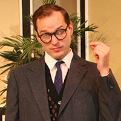
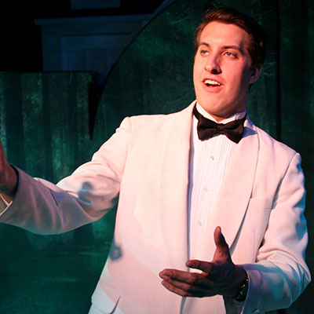
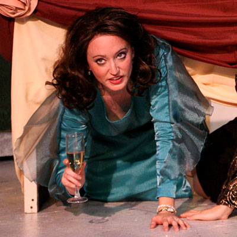

Woody Award Winners 2012-2013 Season

Best Performance by a Lead Actor (Play)
John Markowski
Lend Me A Tenor
John Markowski
Lend Me A Tenor
 Best Performance by an Actress (Play)
Best Performance by an Actress (Play)Joanna Daniel
The Last Romance

Best Performance by a Lead Actor (Musical)
Jeremy Wood
High Society
Jeremy Wood
High Society

Best Performance by a Lead Actress (Musical)
Galen Crawley
High Society
Galen Crawley
High Society
 Best Performance by a Supporting Actor (Play)
Best Performance by a Supporting Actor (Play)Doug Graham
Greetings
 Best Performance by a Supporting Actress (Play)
Best Performance by a Supporting Actress (Play)Pat Bell
The Last Romance
 Best Performance by a Supporting Actor (Musical)
Best Performance by a Supporting Actor (Musical)Robert Wayne
High Society
 Best Performance by a Supporting Actress (Musical)
Best Performance by a Supporting Actress (Musical)Kathleen McCook
High Society
 Best Ensemble Cast
Best Ensemble CastLend Me a Tenor
 Choreography
ChoreographyJen MacQueen
 Musical Direction
Musical DirectionLinda Uzelac
My Way: A Musical Tribute to Frank Sinatra
 Best Lighting Design
Best Lighting DesignMichael Magursky
High Society
 Best Sound Design
Best Sound DesignDan Bauman
Same Time, Next Year
 Best Costume Design
Best Costume DesignJim Alford
Same Time, Next Year
 Best Direction
Best DirectionRobert Egizio
Lend Me a Tenor
 Excellence in Wig Design
Excellence in Wig DesignGeorge Deavours
 Best Show of the Season
Best Show of the SeasonLend Me A Tenor
 Best Set Design
Best Set DesignChuck Welcome
Lend Me A Tenor
 Directors Award
Directors AwardMarcie Millard
 Shayne Kohout Newcomer Award
Shayne Kohout Newcomer AwardJeremy Varner
Excellence in Stage Management
Hampton Whatley
Bill Byrne
Renee Jamieson
Courtney Loner
Marcie Millard
Hampton Whatley
Bill Byrne
Renee Jamieson
Courtney Loner
Marcie Millard
In Appreciation
Portis Building and Interiors
Beverly Powell
Dunwoody Tavern
Dunwoody Woman's Club
Alison's Restaurant
Todd Hollander - Dunwoody Now
The Casino Company
Steve Levene - Reporter Newspapers
R. Todd Fleeman
Bradley Bergeron
Portis Building and Interiors
Beverly Powell
Dunwoody Tavern
Dunwoody Woman's Club
Alison's Restaurant
Todd Hollander - Dunwoody Now
The Casino Company
Steve Levene - Reporter Newspapers
R. Todd Fleeman
Bradley Bergeron